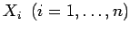
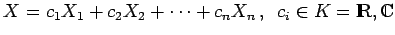
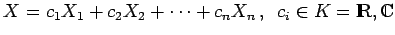
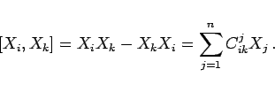
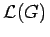

Inhalt Index DeskTop Bronstein

 Algebra und Diskrete Mathematik Klassische algebraische Strukturen Lie-Algebren
Algebra und Diskrete Mathematik Klassische algebraische Strukturen Lie-Algebren


Die infinitesimalen Generatoren  einer LIE-Gruppe bilden die Basis eines n-dimensionalen linearen Raumes, der zur LIE-Algebra  wird, wenn man ihn durch Linearkombinationen  und Kommutatorbildung [Xi,Xk] =XiXk -XkXi abschließt.
wird, wenn man ihn durch Linearkombinationen  und Kommutatorbildung [Xi,Xk] =XiXk -XkXi abschließt.
Der Kommutator zweier Generatoren ist als Linearkombination der Generatoren darstellbar:
|  | (5.146) |
Die Koeffizienten Cikj sind die Strukturkonstanten der LIE-Algebra . Bei einer Basistransformation in transformieren sie sich wie Tensoren 3. Stufe.